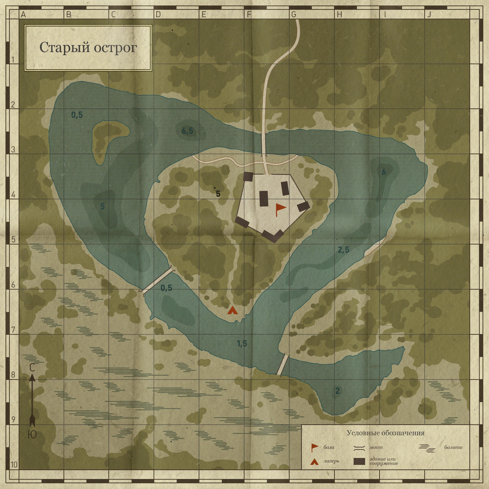
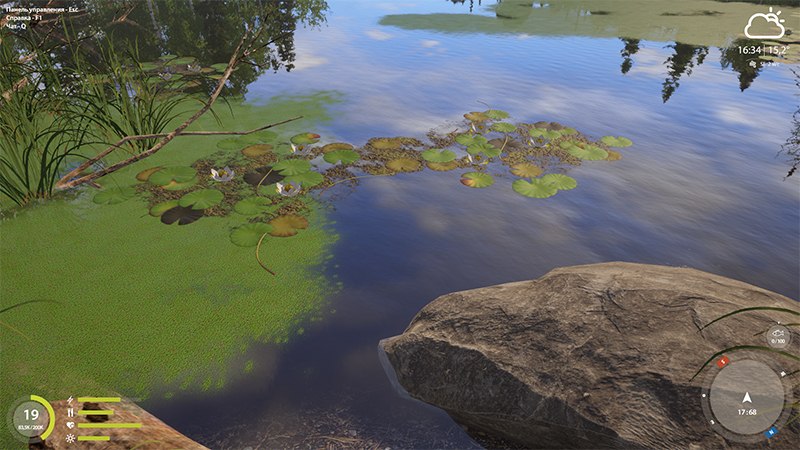
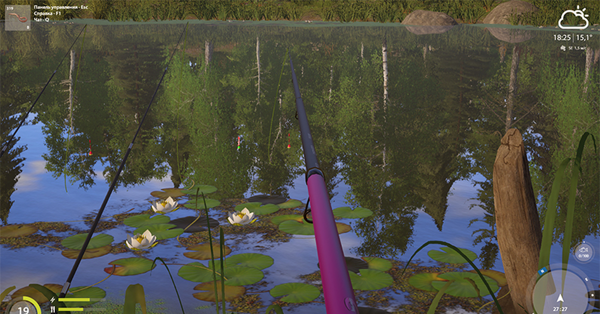

01 · Meaning
不是“地图上有多少个区域”，而是“必须维护多少个内部一致的空间单元”
一个草区在人眼看来是一个自然区域；如果它同时跨越浅水、深水、上午阴影、下午阳光、泥底和低氧边界，静态 Manual Patch 就必须把这些实际交集分别表达。
Meaningful region人能命名的地方
例如“西岸草区”“桥边”“深坑”。它反映策划和玩家怎样理解湖。
State vector属性组合
例如“2–5m、草边、砂底、晨阴午晒、正常 DO”。同一组合可以在多处出现。
Connected patch连通的维护对象
只有相邻且累计状态完全相同的空间才能成为一个 Patch；同状态但不连通仍是两块。
PatchSet = ConnectedComponents(
Geometry ∩ Depth ∩ Vegetation ∩ Structure ∩ Substrate
∩ ShadeMorning ∩ ShadeAfternoon ∩ ShadeDusk
∩ Temperature ∩ DO ∩ Flow ∩ FunctionalTags
)
一句话：计数是逐层相减相加，碎片化机制是受空间和连通性约束的稀疏笛卡尔积。
02 · Interactive walkthrough
一层一层看：每条新边界切开了哪些旧 Patch
用“上一层/下一层”演示，或从选择器直接跳转。颜色只表示当前 Layer；黑色细线表示截至当前层的全部共同细分边界。建议会议中从 Layer 0 逐步点击。
Connected patches—
Unique state vectors—
本层净新增—
被切开的旧 Patch—
- 新边界
- 为什么会 split
- 策划维护
- 本实验如何避免重复
03 · Counting
数字来自共同细分，不是手写增量
湖面以 2m 网格离散。每个水域单元得到累计状态向量；状态相同且四邻域连通的单元计为一个 Patch。
Sₙ(x)
累计状态向量
→4-neighbor
相同状态连通搜索
→Pₙ
连通分量数量
Pₙ = number_of_connected_components(Sₙ)
ΔPₙ = Pₙ − Pₙ₋₁
注意：3 个 Depth 类别 × 3 个 Grass 类别 × 4 个 Shade 状态
只给出 36 种“状态组合”的上限，不是几何 Patch 的上限。
同一状态若在三个不连通位置出现，会形成三个 Patch。
| Layer | Unique vectors | Connected patches | 净新增 | 切开的旧 Patch |
|---|
证据边界：285 是这组明确输入和 2m 分辨率下的确定性结果，不是所有湖泊的行业常数。它证明的是增长机制可以被复算，而不是生产地图必然等于 285。
04 · 2D vs 2.5D/3D
平面等深带和垂直水层必须分开计算
二维 Patch 表达湖面投影上的共同细分。若 Habitat 还要表达鱼在水柱中的占用空间，则需要加入 surface、mid-water、near-bottom，以及随深度变化的 Light、Temperature 与 DO。
2m vertical voxel extension1,033 24
Depth 平面 Patch
五个深度状态因岸形、岛屿、浅滩和深坑形成 24 个不连通平面分量。
150
加入三个 Shade 快照
Morning、Afternoon、Dusk 分别切割已有共同细分；不再额外添加 Period Layer。
1,033
连通 Habitat Volume
加入垂直区、深度衰减光照和垂向 Temperature/DO 后的三维连通体数量。
关键修正：Shade 与 Depth 在二维上会交叉；若表达完整水柱，Shade/Light volume 又会与垂直 Depth layer 继续交叉。两种成本都存在，但不能混在同一个数字里。
05 · Real-game visual reference
RF4 Old Burg Lake：现实画面告诉我们边界不会天然整齐对齐
公开资料只用于验证“这些边界类型在成品钓鱼游戏画面中确实存在”，不用于推断 RF4 内部 Patch 实现，也不从有限截图伪造全图数量。

中央岛、三座桥、窄通道和 0.5–6.5m 深度标注。来源：RF4HUB
睡莲、浮萍、岩石与岸草形成多个局部边缘。来源：Pikabu RF4 截图集
时段变化是可见事实；具体阴影空间场仍需独立数据，不能从单张截图推断。06 · Authoring cost
真正的成本不只是画 285 个多边形
编辑器可以缓解
- 自动叠加、布尔切割和连通分量生成
- 批量赋值、模板与继承
- 相邻同值检测和 merge 建议
- 来源 Layer、状态向量与下游消费者追踪
- 变更影响预览、缝隙/重叠/小碎片检查
- 稳定 ID、差异、迁移和回归快照
结构性问题仍然存在
- 独立边界的非空交集不会因自动切割而消失
- 动态连续场与静态 Patch 存在表达错配
- 是否可 merge 取决于全部下游语义
- 时间、季节和阈值变化会触发重烘焙
- Patch identity 和外部引用需要迁移
- 策划仍须对阈值、例外和功能 Tag 负责
维护成本 ≠ 初次画线
维护成本 = 边界生产 + 交叉切割 + 属性赋值 + 等价性判断
+ 时间版本 + 变更传播 + ID/引用迁移 + 回归审查
如果某些维度保持为正交 Layer、派生字段或运行时查询，就不必全部烘焙进同一组原子 Patch；但成本会转移到查询、缓存、冲突、调试和一致性。这个实验只提供证据，不替方案做 promotion/reject。
07 · Executive walkthrough
和高层一起看的 12 分钟讲法
先框定问题今天不决定 Manual/Procedural/Runtime Query，只看“若全部烘焙成手工原子 Patch，会发生什么”。
从 Layer 0 点到 Depth强调五个深度状态已经形成 24 个不连通 Patch：类别数不等于几何对象数。
点过 Grass、Structure、Substrate让参会者指出新边界穿过哪些旧块；看数量从 24 走到 106。
逐次加入 Morning、Afternoon、Dusk盯住同一铧尖或草区，看移动阴影分别切割 Depth 与 Grass，不再用抽象 Period 重复计算。
加入 Temperature 与 DO说明后加入的错位边界是在切割已经组合过的空间，因此 DO 一层净增 48。
停在 285，再展示 1,033明确二维 Patch 与三维 Habitat Volume 是两个问题；最后只讨论哪些维度必须烘焙、哪些可以保持正交。